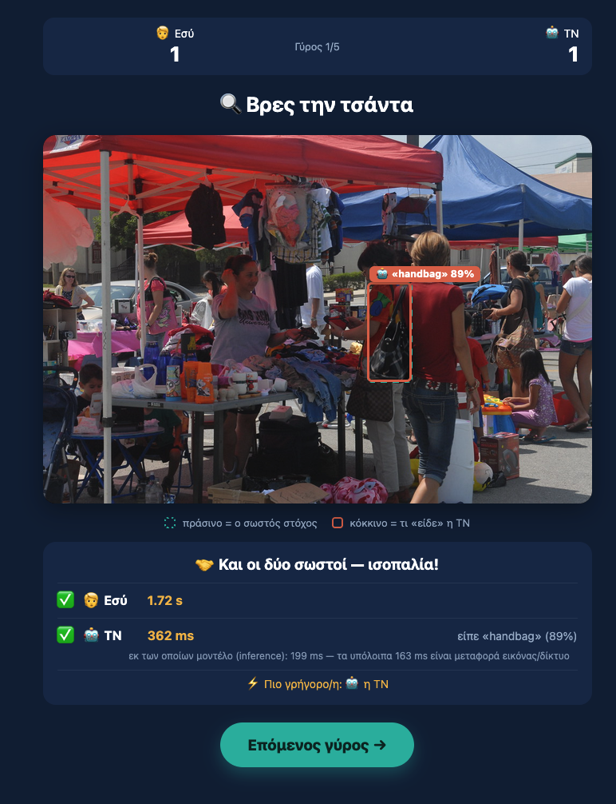

Human vs AI
«Βρες το κουτάλι»: ένας αγώνας εντοπισμού αντικειμένου ανάμεσα στο ανθρώπινο μάτι και ένα μοντέλο όρασης.
1 Σχετικά
Ένα παιχνίδι «βρες το αντικείμενο» ένας-προς-έναν: εσύ και ένα μοντέλο όρασης καλείστε να βρείτε το ίδιο αντικείμενο κρυμμένο κάπου σε μια εικόνα, με χρονόμετρο. Πέντε γύροι, ο καθένας πιο δύσκολος από τον προηγούμενο: ένα γεμάτο γραφείο με σχεδόν ίδια αντικείμενα, μια σκηνή μέσα σε πυκνή ομίχλη και άλλες δύσκολες εικόνες που δυσκολεύουν πότε τη μία πλευρά και πότε την άλλη. Μετά από πέντε εικόνες, οι βαθμοί αθροίζονται και συγκρίνονται. Στόχος είναι να γίνει απτό ένα δίλημμα: τα μοντέλα όρασης είναι συχνά πολύ πιο γρήγορα από την ανθρώπινη αντίληψη, αλλά δεν είναι αλάνθαστα. Το παιχνίδι δείχνει γρήγορα και οπτικά και την ταχύτητα και τα λάθη τους, το ένα δίπλα στο άλλο.
2 Προεπισκόπηση
Η κύρια διεπαφή: το ζωντανό σκορ (εσύ εναντίον του μοντέλου) πάνω από τον μετρητή γύρων, με την εικόνα-στόχο στο κέντρο της οθόνης.

3 Παίξε
Ανοίγει το διαδραστικό παιχνίδι σε νέα καρτέλα.